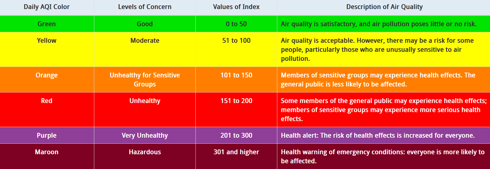
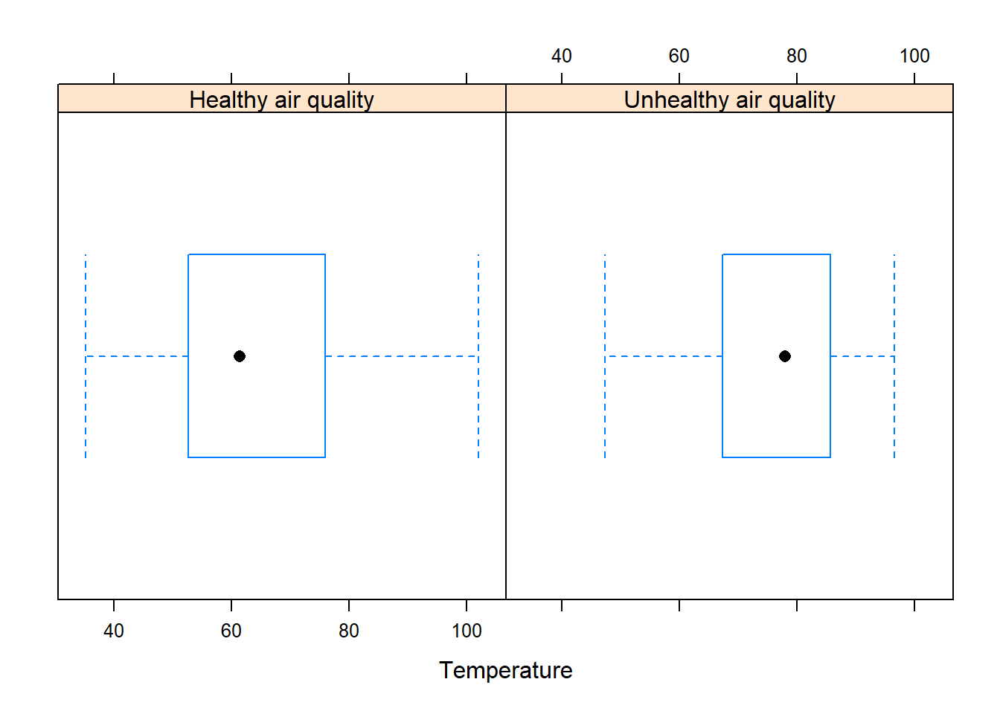
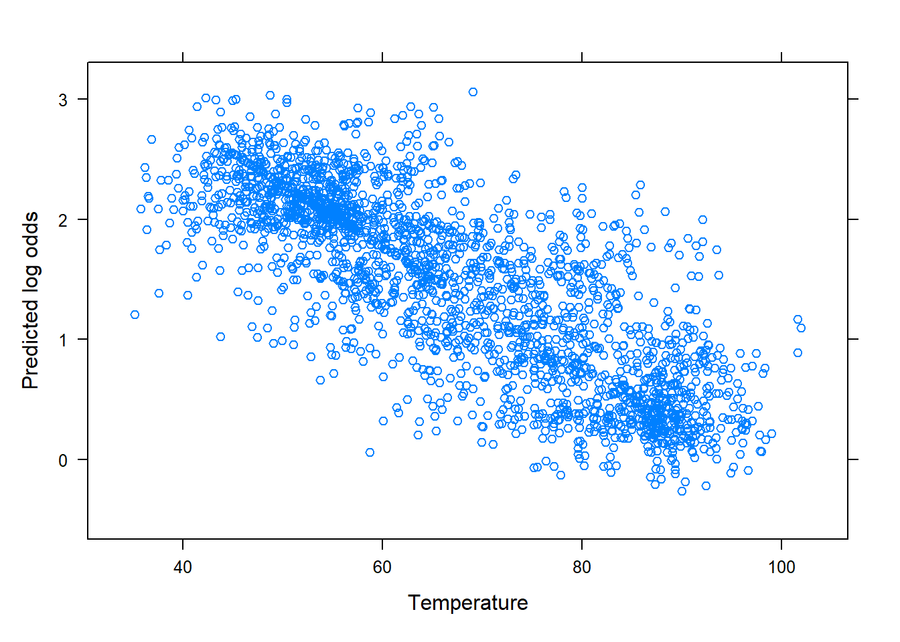
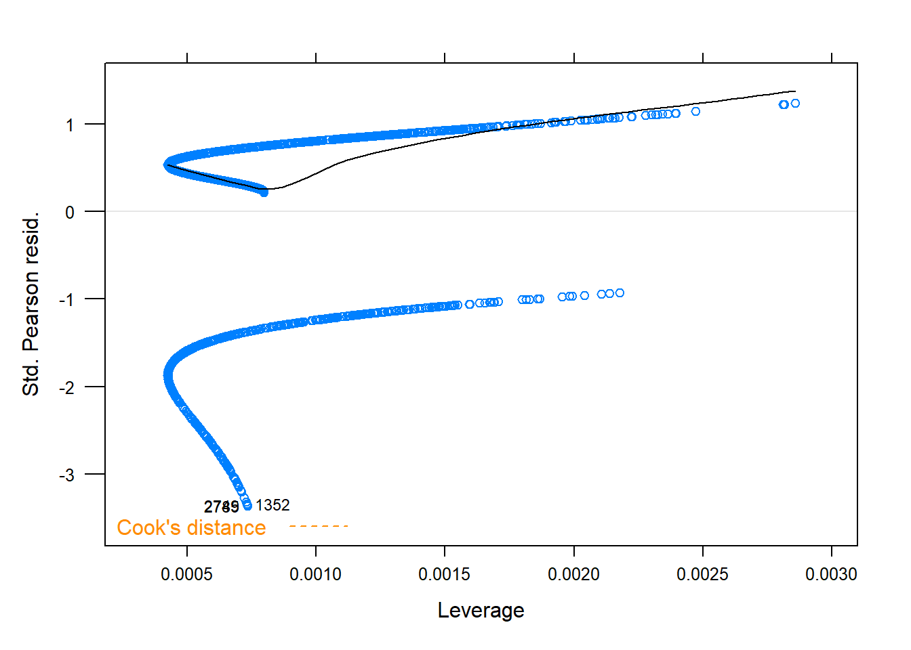

AI art generated from the text “simple logistic regression”
Simple (binary) logistic regression (SLogiR) allows us to assess the relationship between a binary response variable (i.e., a categorical variable with two possible outcomes) and a numerical or categorical explanatory variable. Unlike simple linear regression, which examines the relationship between two numerical variables, simple logistic regression (SLogiR) is used when the response variable is binary. By modeling the probability of the response variable taking on a specific outcome, SLogiR can help identify the impact of the explanatory variable on the likelihood of observing one of the two possible outcomes.
Notation
Some essential notation and definitions for the SLogiR: Let \(y\) denote the binary response variable and \(x\) denote the explanatory variable. For a given observation, \(y\) takes on either the value 0 or 1. Specifically, \(y=1\) with probability \(p\) and \(y=0\) with probability \(1-p\). In SLogiR, we estimate the slope and intercept of the model to relate \(p\) to the logit scale (i.e., the logarithm of the odds of success) to the explanatory variable, instead of directly modeling the response variable. Therefore, we can represent the SLogiR model with the following equation:
\(\beta_0\) is the true intercept, which represents the value of \(logit(p)\) when \(x\) is equal to 0.
\(\beta_1\) is the true slope, which represents the average change in \(logit(p)\) for a unit increase in \(x\).
\(log(\frac{p}{1-p})\) is the logit transformation of the probability that \(y=1\).
This model captures the relationship between the explanatory variable \(x\) and the odds of success (i.e., the ratio of the probability that \(y=1\) to the probability of \(y=0\)), which is then transformed to the logit scale for modeling purposes. The logit scale provides a way to interpret the \(\beta_1\). For example, \(logit(0.5)=0\) and \(logit(0.6)=0.4\) Thus, an increase of \(0.4\) on the logit scale corresponds to a change from \(0.50\) (or 50%) to \(0.60\) (or 60%) in the probability scale. In other words, a one-unit increase in \(x\) is associated with a \(\beta_1\) increase in the logit of the odds of \(y=1\)
Another way to interpret \(\beta_1\) is in terms of odds. The term \(p/(1-p)\) is the odds that \(y=1\) relative to \(y=0\). The above equation shows that the log odds, \(log(p/(1-p))\) are linearly related to \(x\). Suppose the log odds are computed at a value of \(x\), which we denote by \(log(odds_1)\). If we increase \(x\) by one unit and compute the log odds at the new value of \(x\), denoted by \(log(odds_2)\), the difference in the log odds becomes
This means that \(\frac{odds_2}{odds_1}=e^{\beta_1}\). In short, for each one-unit increase in \(x\), the odds of the binary response variable change multiplicatively by a factor of \(e^{\beta_1}\). For example, if \(\frac{odds_2}{odds_1}=e^{\beta_1}=1.20\), the odds of the response variable taking the value of 1 increase by 20%. Conversely, if \(\frac{odds_2}{odds_1}=e^{\beta_1}=0.75\), the odds of the response variable taking the value of 1 decrease by 25%.
Estimates of \(\beta_0\) and \(\beta_1\) are obtained via maximum likelihood estimation and are denoted by \(b_0\) and \(b_1\).
Notation
\(b_1\) is an estimate of \(\beta_1\). The estimate \(b_1\) represents the estimated change in the logit (log odds) of the odds that \(y=1\) for a one-unit increase in the explanatory variable.
The term \(e^{b_1}\) reflects the factor by which the odds of the response variable taking the value of 1 are estimated to change for a one-unit increase in the explanatory variable.
These estimates are used to obtain predicted values of the response variable provided by the SLogiR model for a given value of the explanatory variable. In other words, it represents the model’s best estimate of the response variable based a value of the of the explanatory variables. With a SLogiR, the predicted values can be given as an estimated probability of the response variable being 1 for a given value of \(x\). They can also be given on the log-odds scale.
A residual is the difference between an observed value and its corresponding predicted value provided by the SLogiR model. In the context of a SLogiR model, residuals are typically more complex compared to a standard linear regression model because of the nature of the binary outcome and the use of the logistic function. Some common types of residuals used in logistic regression include deviance residuals, Pearson residuals, and their standardized versions1. Each of these residuals is calculated differently and serves specific purposes in model diagnostics and assessment.
Now that some basic concepts of SLogiR have been covered, this section illustrates common key aspects of SLogiR, including:
Fitting the SLogiR model to data using R, model diagnostics, and interpreting the fit.
Performing a Wald test to determine if the probability of the characteristic depends on the value of the explanatory variable.
Constructing a Wald-based confidence interval for \(\beta_1\).
For inferential methods in SLogiR to provide meaningful results, several assumptions are made about the data on which the method is intended to be used.
Data assumptions
The methods discussed here assume one or more of the following assumptions about the data:
Assumption 1. Independence of the observations. Each binary outcome is independent of the other binary outcomes.
Assumption 2. No influential outliers. The data should not contain any influential outliers2 that significantly affect the estimate SLR line.
Assumption 3. Large sample. The sample should be large3. The larger the sample the better. Smaller sample sizes may lead to unreliable estimates and wider CIs.
Assumption 4. Linearity of log-odds. The log-odds of the probability of the response variable taking the value of 1 is a linear function of the explanatory variable.
While these assumptions are assessed below with a case study, assumption 1 can be assessed by the study design. Assumption 2 is examined using the Pearson or deviance residuals, assumption 3 can be examined using the data, and assumption 4 is assessed by examining the relationship between the predicted log odds and the explanatory variable. Note that if any assumptions are not met, then the model is not appropriate for the data. In such instances, possible remedial measures include transforming the explanatory variable (see Section 14.4) or increasing the sample size if possible (larger sample sizes can improve the SLogiR fit to the data)
15.1 Fitting the SLogiR model and model diagnostics.
The function glm() is used to fit the SLogiR model to the data.
R functions
### glm( y ~ x , data , family )
# y: Replace y with the name of the binary response
# variable of interest
# x: Replace x with the name of the explanatory variable
# data: Set equal to the name of the dataframe.
# family: set equal to "binomial"
#
Note that the R functions used in these modules often have identical arguments, which will no longer be described in this module. The glm() function provides more than just the values of \(b_0\) and \(b_1\), and the illustrations below show how to use it to create an glm object that contains useful information. To summarize the SLR model fit, extract the predicted probabilities that \(y=1\) for a given value of \(x\), or extract the Pearson residuals from the glm object, we use the summary(), predict(), and residuals() functions on the glm object, respectively. The function xyplot() (after loading the tactile package) will also be used.
R functions
### summary( lm object )
# lm object: An object saving the result of
# an lm function.
#
### predict( lm object, type )
# type: Set equal to "link" (prediction log odds scale) or
# "response" (predicted probabilites)
#
### residuals( lm object )
# type: Set equal to "deviance" for deviance residuals,
# "pearson" for pearson residuals,
# "partial" for partial residuals
#
### xyplot( lm object )
#
The summary() function will provide a lot of information, including the values of \(b_0\) and \(b_1\). To perform model diagnostics (process of assessing the validity of the assumptions about the data) the functions predict() and xplot() are used to create the following plots
Explanatory variable vs. predicted log odds values: This residual plot shows the relationship between the explanatory variable and the predicted values on the log odds scale. The plot helps to assess assumption 4. A plot that shows a linear trend suggests that this assumption is reasonable. A clear non-linear trend implies that that assumption 4 is questionable.
Standardized Pearson residuals vs. leverage plot: This plot shows the leverage (the degree to which an observation affects the estimated slope) against the standardized Pearson residuals. Potential influential outliers will have a high leverage and large residual in magnitude.
Note
AQI stands for Air Quality Index, which is a measure used to report the level of air pollution in a specific area at a given time. It takes into account the concentrations of several air pollutants (such as ground-level ozone, particulate matter, and others) and is generally reported on a scale from 0 to 500. The index is divided into different categories, each corresponding to a range of values, and each category has a color code to reflect the level of air pollution in a given area.

Figure 15.1: Air Quality Index (AQI) levels of health concern. Source: www.airnow.gov
AQI values and temperature can be related or associated in air pollution studies, but the nature of their relationship can vary depending on a number of factors. For example, high temperatures may increase the formation and concentration of certain air pollutants, such as ground-level ozone or particulate matter. However, AQI values are affected by a range of other factors, such as wind speed, urban vs rural area, humidity, an area’s high fire risk, and the types and levels of pollutants in the air.
The case study Chapter 3 provides daily measurements of several variables, including PM10, AQI, …, City.Name and others. For the purposes of this analysis, that data now includes a categorical variable called type_of_day. The categorical variable has two possible values (“Healthy air quality” or “Unhealthy air quality”), and a binary version of the variable, type_of_day01, was created with outcomes of 1 for “Healthy air quality” and 0 for “Unhealthy air quality”. A day is classified as having “Unhealthy air quality” if its AQI exceeds 50. The goal of this study is to investigate the relationship between the type of day and temperature. To begin the analysis, the data are imported and explored using numerical and graphical data summaries.
# Import data AQIdf<-read.csv("datasets/DailyAQI.2021.csv")# Print the variable names in the datasetnames(AQIdf)#> [1] "PM10" "AQI" "temp" "Latitude" #> [5] "Longitude" "windspeed" "state" "county" #> [9] "City.Name" "type_of_day" "type_of_day01"# Load the dplyr packagelibrary(dplyr)# Provides the mutate() function# Transform the type_of_day into a factor variable # using the mutate() function. This has R treat# `type_of_day` as a categorical variable.AQIdf<-mutate(AQIdf, type_of_day =as.factor(type_of_day), type_of_day01 =as.factor(type_of_day01))# Print the summary statistics of the datasetsummary(AQIdf)#> PM10 AQI temp Latitude #> Min. : 0.0 Min. : 0.00 Min. : 35.13 Min. :35.05 #> 1st Qu.: 19.0 1st Qu.: 18.00 1st Qu.: 54.19 1st Qu.:35.44 #> Median : 32.0 Median : 30.00 Median : 64.79 Median :35.73 #> Mean : 38.9 Mean : 33.34 Mean : 66.91 Mean :36.02 #> 3rd Qu.: 50.0 3rd Qu.: 46.00 3rd Qu.: 80.05 3rd Qu.:36.79 #> Max. :437.0 Max. :316.00 Max. :102.00 Max. :36.99 #> NA's :391 #> Longitude windspeed state county #> Min. :-119.8 Min. : 0.750 Length:3115 Length:3115 #> 1st Qu.:-119.7 1st Qu.: 2.090 Class :character Class :character #> Median :-119.1 Median : 3.337 Mode :character Mode :character #> Mean :-118.9 Mean : 4.147 #> 3rd Qu.:-118.2 3rd Qu.: 4.917 #> Max. :-117.7 Max. :22.462 #> #> City.Name type_of_day type_of_day01#> Length:3115 Healthy air quality :2476 0: 639 #> Class :character Unhealthy air quality: 639 1:2476 #> Mode :character #> #> #> #> # Load the lattice packagelibrary(lattice)# Provides the bwplot() function# Create a boxplot of temperature by type of daybwplot(~temp|type_of_day , data=AQIdf , xlab="Temperature")

Code
# Load the mosaic package, which allows formula expression in mean() and sd()library(mosaic)# Compute the mean temperature by type of daymean(~temp|type_of_day , data=AQIdf, na.rm=TRUE)#> Healthy air quality Unhealthy air quality #> 64.38551 75.64739# Compute the standard deviation of temperature by type of daysd(~temp|type_of_day , data=AQIdf, na.rm=TRUE)#> Healthy air quality Unhealthy air quality #> 14.95971 12.15426
The boxplots and summary statistics show that temperatures tend to be lower on healthy air days compared to unhealthy air days. The mean temperatures for healthy air days are also lower than those for unhealthy air days. Additionally, temperatures exhibit more variability on healthy air days compared to unhealthy air days. This may indicate more extreme temperatures on healthy air days or suggest that other factors contribute to the variability, such as wind speed or humidity.
The SLogiR model is fitted using glm() but note that the response variable must be binary (such as type_of_day01):
# The function will require the following information:# y: Replace with 'type_of_day01', the binary response variable.# x: Replace with 'temp', the explanatory variable.# data: Set equal to a 'kernAQIdf', the name of the dataframe.# family: Set equal to "binomial".# Fit the SLogiR model using glm() functionglm(type_of_day01~temp , data =AQIdf , family ="binomial")#> #> Call: glm(formula = type_of_day01 ~ temp, family = "binomial", data = AQIdf)#> #> Coefficients:#> (Intercept) temp #> 4.89571 -0.05214 #> #> Degrees of Freedom: 2723 Total (i.e. Null); 2722 Residual#> (391 observations deleted due to missingness)#> Null Deviance: 2897 #> Residual Deviance: 2629 AIC: 2633
The output provides \(b_0= 4.90\) and \(b_1=-0.05\). Note that \(e^{b_1}=e^{-0.05}=0.95\), which suggests that the odds of having a healthy air day are estimated to decrease by 5% for each degree increase in temperature. This also suggests that a 5 degree increase in temperature means that the odds of having a healthy air day are estimated to decrease by 25% The glm() function provides much more than just these values. To extract other information, the result from glm() must be stored. Below the resulting glm() fit is stored and then the summary() is applied to this object. The functions residuals() and predict() are also illustrated below.
# Store glm() fit in an object, call it aqfitaqfit<-glm(type_of_day01~temp , data =AQIdf , family ="binomial")# aqfit is called an glm object.# Display a summary of the SLogiR model fit using the summary() function on the glm object, aqfit.summary(aqfit)#> #> Call:#> glm(formula = type_of_day01 ~ temp, family = "binomial", data = AQIdf)#> #> Deviance Residuals: #> Min 1Q Median 3Q Max #> -2.2405 0.3715 0.5044 0.7166 1.3612 #> #> Coefficients:#> Estimate Std. Error z value Pr(>|z|) #> (Intercept) 4.895708 0.251133 19.49 <2e-16 ***#> temp -0.052137 0.003377 -15.44 <2e-16 ***#> ---#> Signif. codes: 0 '***' 0.001 '**' 0.01 '*' 0.05 '.' 0.1 ' ' 1#> #> (Dispersion parameter for binomial family taken to be 1)#> #> Null deviance: 2897.5 on 2723 degrees of freedom#> Residual deviance: 2629.3 on 2722 degrees of freedom#> (391 observations deleted due to missingness)#> AIC: 2633.3#> #> Number of Fisher Scoring iterations: 4# Extract the residuals from the glm object, aqfit, and store them in aqres# The type argument specifies the type of residuals to extract,# which in this case are Pearson residualsaqres<-residuals(aqfit, type ="pearson")# Extract the predicted values from the glm object, aqfit, and store # them in aqpredictLO. The type argument specifies the scale of the predictions, which in this case is the log odds scale# Store the result in an object called aqpredictLOaqpredictLO<-predict(aqfit, type ="link")# Extract the predicted probabilities of y=1 from the glm object, aqfit, # and store them in an object called aqpredictProbs.# The type argument specifies the scale of the predictions, which # in this case is the probability scale.aqpredictProbs<-predict(aqfit, type ="response")
See previous video.
Note that the summary() provides the following table:
Estimate
Std. Error
t-value
p-value -
(Intercept)
\(b_0\)
\(SE_{b_0}\)
\(Z_{b_0}\)
p-value\(_{b_0}\)
explanatory
\(b_1\)
\(SE_{b_1}\)
\(Z_{b_1}\)
p-value\(_{b_1}\)
The terms \(SE_{b_0}\) and \(SE_{b_1}\) are the standard errors for \(b_0\) and \(b_1\). The next sections cover inference for the SLogiR, and it requires that the assumptions about the data be reasonable.
Next, we perform model diagnostics to assess the model assumptions with the help of the stored fitted values, residuals, and xyplot(). Here, xyplot() will only require the glm object after loading the tactile R package:
# Create a scatter plot of the predicted log odds # against temperature. xyplot(aqpredictLO~temp, data =AQIdf , xlab ="Temperature" , ylab="Predicted log odds")# Load the tactile package, which allows the creation# of residual plots using the glm objectlibrary(tactile)# Plot Pearson residuals vs. leverage.# Note that xyplot() can produce various# residual plots, but only certain plots# are relevant for the SLogiR model.# Create a scatter plot of the Pearson residuals (from aqfit) vs. leverage.xyplot(aqfit, which=5)# this tells R to plot residuals vs. leverage.

Figure 15.2: Diagnostic plots

Figure 15.3: Diagnostic plots
Each plot is analyzed and interpreted below:
The plot on the left displays the predicted log odds against the explanatory variable and shows a linear trend. This suggests that Assumption 4 (linearity of log-odds) is reasonable.
The plot on the right shows the standardized Pearson residuals against the leverage. The presence of some potential outliers (standardized Pearson residuals greater than 3 in magnitude) is visible. Cook’s distance4 contour lines of 1/2 and 1 are plotted, but no leverage values exceed a Cook’s distance of 1. This suggests that Assumption 2 (no influential outliers) is reasonable.
Assumptions 1 (independence of observations) and 3 (large sample size) are reasonable since the sample size is large, and it seems reasonable to assume that a given observation is not influenced by or related to the rest of the observations.
Overall, all data assumptions are met for the SLogiR model.
15.2 Inference on the Explanatory Variable use Wald-based methods
The focus in this section is on inference for \(\beta_1\) (the true slope) in the context of SLogiR. The Wald test for the slope of a regression line is a widely used hypothesis test to assess the significance of the explanatory variable’s effect on the binary response variable. Specifically, the test is used to determine if the true slope \(\beta_1\) is significantly different from zero, based on the observed value of \(b_1\).
It is important to note that the observed value of \(b_1\) can vary. If a study were replicated, the value of \(b_1\) would likely be different. The use of inferential methods allows us to account for this variability and make statistically valid conclusions about the true slope \(\beta_1\). A Wald-based confidence interval can be constructed for \(\beta_1\) and it provides a range of plausible values for the true slope at a specified significance level. These methods are generally referred to as Wald-based methods for the slope.
The Wald test requires that certain assumptions (1, 2, 3, and 4) about the data are reasonable. The test statistic for this Wald test may be defined as:
\[Z= \frac{b_1}{SE_{b_1}}\]
Here, \(SE_{b_1}\) represents the standard error of \(b_1\)5. Our primary interest is in determining if \(\beta_1\) is significantly different from zero, which translate to \(\beta_1\neq 0\). Consequently, the null and alternative hypotheses are:
\[H_0: \beta_1=0 \qquad H_a: \beta_1 \neq 0\]
Under \(H_0\), the null distribution of the test statistic \(Z\) follows a standard normal distribution6. This distribution is used to compute the p-value. The function glm() computes the test statistic and p-value for the Wald test, and the results are provided by the summary() output. Recall that the summary() function provides a table with relevant information, including a test statistic and p-value for the Wald test, as well as other statistics like the coefficient estimates and standard errors:
Estimate
Std. Error
z-value
p-value
(Intercept)
\(b_0\)
\(SE_{b_0}\)
\(Z_{b_0}\)
p-value\(_{b_0}\)
explanatory
\(b_1\)
\(SE_{b_1}\)
\(Z_{b_1}\)
p-value\(_{b_1}\)
Here, \(Z_{b_1}\) and p-value\(_{b_1}\) refer to the test statistic for the Wald test and the two-sided p-value\(_{b_1}\), respectively for testing if \(\beta_1\neq 0\). The function glm() can also be utilized to obtain a confidence interval (CI) for the true slope \(\beta_1\). To obtain a CI, apply the confint() function to the resulting glm object.
R functions
### confint( glm object , parm , level)
# lm object: An object saving the result of usuing
# the lm function.
# parm: Set equal to 2
# level: Set to desired confidence level.
#
Note
We apply a Wald test to the data involving AQI levels and temperature. The aim is to investigate the effect of temperature on the probability of having an ‘Unhealthy air quality’ day compared to a ‘Healthy air quality’ day at \(\alpha=.001\). Let \(\beta_1\) represent the effect of temperature on the odds of having an ‘Unhealthy air quality’ day. Since the aim is to determine if the effect is significant, the hypotheses are:
\[H_0: \beta_1=0 \qquad H_a: \beta_1 \neq 0\]
The following code uses glm() and summary() to obtain the test statistic and the corresponding p-value for a Wald test:
# The glm object, aqfit, was previously created by # fitting a SLogiR model to the data.# Summarizes the model fit using the summary() function on # the glm object, aqfit.summary(aqfit)#> #> Call:#> glm(formula = type_of_day01 ~ temp, family = "binomial", data = AQIdf)#> #> Deviance Residuals: #> Min 1Q Median 3Q Max #> -2.2405 0.3715 0.5044 0.7166 1.3612 #> #> Coefficients:#> Estimate Std. Error z value Pr(>|z|) #> (Intercept) 4.895708 0.251133 19.49 <2e-16 ***#> temp -0.052137 0.003377 -15.44 <2e-16 ***#> ---#> Signif. codes: 0 '***' 0.001 '**' 0.01 '*' 0.05 '.' 0.1 ' ' 1#> #> (Dispersion parameter for binomial family taken to be 1)#> #> Null deviance: 2897.5 on 2723 degrees of freedom#> Residual deviance: 2629.3 on 2722 degrees of freedom#> (391 observations deleted due to missingness)#> AIC: 2633.3#> #> Number of Fisher Scoring iterations: 4
Based on output from summary( aqfit ), the observed value of test statistic is \(Z=-15.44\). The corresponding p-value is approximately 0, indicating that the data provides very strong evidence against the null hypothesis. When considering a significance level of \(\alpha=.001\), since the p-value\(\leq \alpha=.001\), we have sufficient evidence to reject the null hypothesis \(H_0\) in favor of the alternative hypothesis \(H_a\). This means that there is a significant effect of temperature on the odds of having an “Unhealthy air quality” day compared to a “Healthy air quality” day. In other words, temperature levels have a significant impact on the probability of observing an unhealthy or healthy air quality day. This also suggests that temperature is an important factor to consider when analyzing or predicting air quality conditions, and that the relationship between these variables is not due to chance alone.
The function confint() is used to obtain a 99% CI for \(\beta1\):
# Summarize the lm object, PM10fit. ct# Compute a 99% CI for beta1.confint(aqfit , parm=2 , # Setting parm =1 will provide CI for beta0 level=.99)#> 0.5 % 99.5 % #> -0.06095298 -0.04354691
See previous video.
The output provides a 99% CI for \(\beta_1\) with bounds \((-0.061, -0.044)\). Thus, we can be 99% confident that the true effect of temperature on the log-odds of having an “Healthy air quality” day compared to a “Unhealthy air quality” day lies between -0.061 and -0.044. Since the interval does not contain 0, it further supports the conclusion that changes in temperature levels affect the probability of observing unhealthy or healthy air quality day.
Note, if the bounds on the CI are exponentiated, it provides a CI for the odds. Thus, we can be 99% confident that the interval for \(e^{\beta_1}\) is given by \((e^{-0.061}, e^{-0.044})\), which is approximately \((0.941, 0.957)\). In other words, we are 99% confident that with each unit increase in temperature, the odds of having a “Healthy air quality” day compared to an “Unhealthy air quality” day decrease anywhere from 4.3% to 5.9%
15.3 Sample size estimation and power analysis for SLogiR
Ideally, researchers should estimate the sample size for a study before collecting data. Knowing the sample size required to detect a desired effect at the beginning of a project allows one to manage their data collection efforts. Further, this allows researchers to determine the statistical power the test will have to detect an effect if it exists. The R functions powerLogisticCon() and SSizeLogisticCon() from the powerMediation R package provide sample size and statistical power calculations for a SLogiR model, respectively, when the explanatory variable is assumed to be numerical. Both functions assume the appropriate assumptions about the data for the Wald test are met.
R functions
### powerLogisticCon( n , p1, OR, alpha = 0.05 )
# n: Set equal to the desired sample size.
# p1: Set equal to the expected probability of observing a 1
# for an outcome. Typically it is set to .5.
# OR: Set equal to the expected odds ratio. log(OR) is
# the change in log odds for an increase of one unit
# in X. Thus, beta1=log(OR) is the effect size to be tested.
# alpha: Set equal to the desired alpha value (significance level).
#
### SSizeLogisticCon(power, p1, OR, alpha = 0.05 )
# power: Set equal to the desired power (a number between 0 and 1).
# p1: Set equal to the expected probability of observing a 1
# for an outcome. Typically it is set to .5.
# OR: Set equal to the expected odds ratio. log(OR) is
# the change in log odds for an increase of one unit
# in X. Thus, beta1=log(OR) is the effect size to be tested.
# alpha: Set equal to the desired alpha value (significance level).
#
Note
Below we use powerLogisticCon() to determine the power when the sample size is 150, probability of observing a 1 is .5, and expected odds ratio of 1.5 at significance level of \(\alpha=.001\).
Code
# Load the powerMediation package library(powerMediation)# Provides SSizeLogisticCon and powerLogisticCon# Calculate the statistical power of a SLogiR model powerLogisticCon( n =150 , p1 =.5 , OR =1.5 , alpha =.001)#> [1] 0.209669
The statistical power of this test is low. To increase the power, one may increase the effect size (the larger it is, the easier it is to detect), increase \(\alpha\) (make it easier to reject \(H_0\) and find a significant effect), and/or increase the sample size.
Below we use SSizeLogisticCon() to determine the sample size needed to obtain a power of .90 when the probability of observing a 1 is .5, and the expected odds ratio is 1.5 at a significance level of \(\alpha=.001\).
Code
# Compute the required sample size for a SLogiR modelSSizeLogisticCon( p1 =.5 , OR =1.5 , alpha =.001 , power =.90)#> [1] 509
To obtain a power of at least .90 under the given conditions, a sample size of at least 509 is needed.
The formulas for the deviance or Pearson residuals will not be discussed, as the formulas may be considered complex for novice learners. Pearson residuals gives a sense how far off the model’s predicted probability is from the actual outcome, after adjusting for the expected variability in the predictions. Deviance residuals provide an idea of how much each observation contributes to the overall lack of fit of the model, with larger values indicating a poorer fit for that specific observation.↩︎
An influential outlier is an observation that greatly impacts the estimated SLR line, resulting in a bad fit to the data. It can have a substantial impact on the estimated slope and/or intercept of the line.↩︎
There is no strict rule for what constitutes a large sample in logistic regression, as it depends on the specific context, the effect size, and the desired level of statistical power. However, a common rule of thumb is to have at least 10 occurrences of each outcome (0 and 1) for the binary response variable.↩︎
Cook’s distance is a measure of both the leverage and influence of a data point on the est coefficients. This measure is often used to identify potentially influential observations (typically those with a Cook’s distance exceeding 1). Note that Cook’s distance is just one tool (of many others) for identifying influential observations.↩︎
The standard error of the slope estimate quantifies how much \(b_1\) will vary across different samples if the study were replicated many times. A smaller standard error means that the estimate is more precise and varies less across different samples, while a larger standard error means the opposite.↩︎
Other functions or software packages may report the Wald test statistic as \(W=Z^2\). This version of the test statistic follows a chi-square distribution with 1 degree of freedom.↩︎